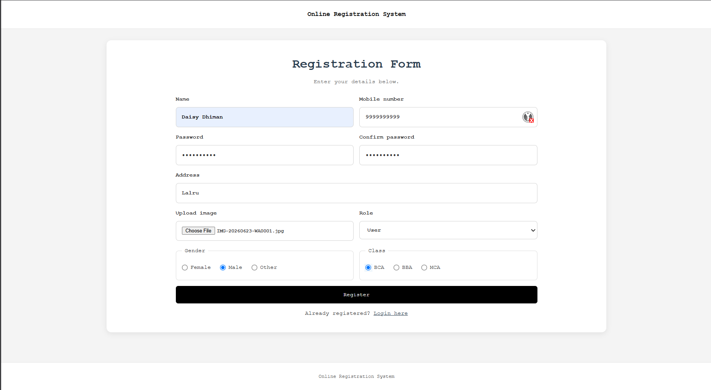
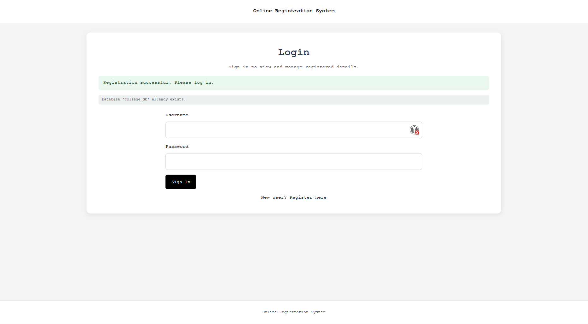
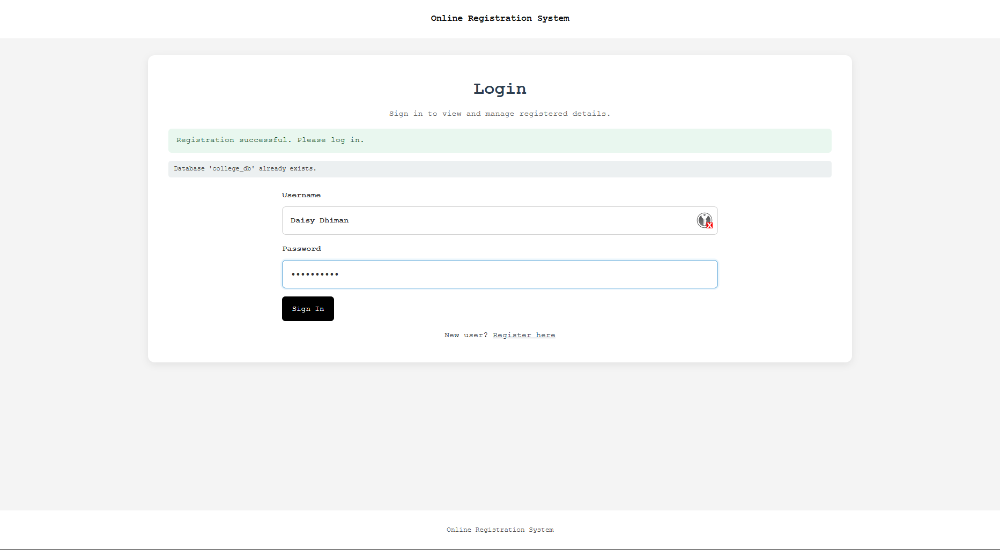
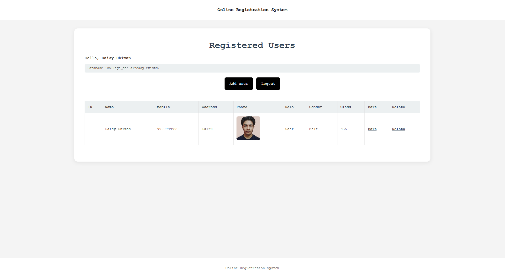
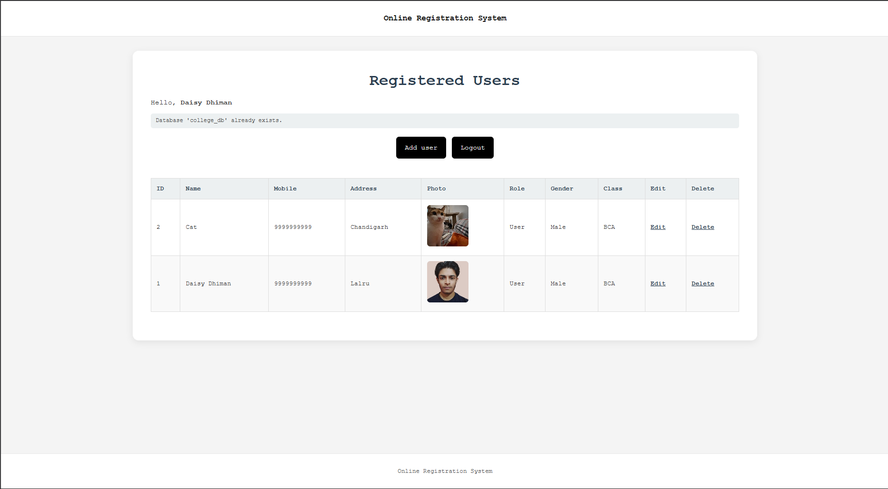
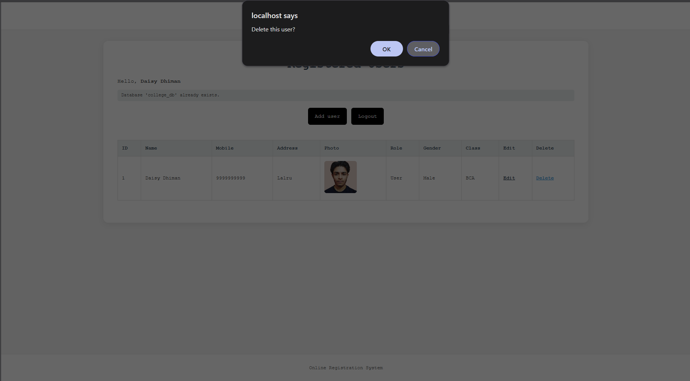
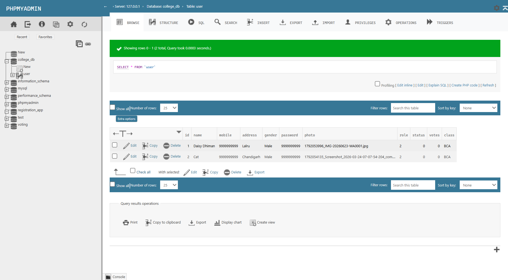

This project is an online registration and user management system developed using PHP and MySQL. It features user registration with avatar image upload, session-based authentication (login/logout), and full CRUD operations allowing authorized users to view, edit, and delete user records.
college_db database and user table if they do not exist.uploads/ directory.The registration interface allows new users to submit their full profile information, select their role and class, and upload an avatar photo.

Secure login portal verifying mobile number, password, and designated role before granting access to the system dashboard.


Displays all registered members in a tabular view with profile pictures, role tags, and direct actions to edit or delete records.


Interactive confirmation dialog ensuring accidental deletion is prevented while removing associated user data and avatar files.

Administrative view showing system status, database health confirmation, and user directory management tools.

Establishes connection to the MySQL server, verifies if college_db exists (creating it if absent), selects the database, and ensures the user table is created with the required schema.
<?php
// Connect to MySQL first (without choosing a database).
$con = mysqli_connect("localhost", "root", "");
if (!$con) {
die("MySQL is not running. Open XAMPP and start MySQL.");
}
// Check whether the database already exists. Create it only if it is missing.
$check = mysqli_query($con, "SHOW DATABASES LIKE 'college_db'");
if (mysqli_num_rows($check) > 0) {
$dbMessage = "Database 'college_db' already exists.";
} else {
if (!mysqli_query($con, "CREATE DATABASE college_db")) {
die("Could not create database 'college_db'. Check your MySQL settings.");
}
$dbMessage = "Database 'voting' was created.";
}
mysqli_select_db($con, "college_db");
// If the database exists but the table doesn't, create the table too.
$tableCreated = mysqli_query($con, "CREATE TABLE IF NOT EXISTS user (
id INT AUTO_INCREMENT PRIMARY KEY,
name VARCHAR(100) NOT NULL,
mobile VARCHAR(30) NOT NULL,
address VARCHAR(255) NOT NULL,
gender VARCHAR(20) NOT NULL,
password VARCHAR(255) NOT NULL,
photo VARCHAR(255) NOT NULL,
role VARCHAR(20) NOT NULL,
status INT DEFAULT 0,
votes INT DEFAULT 0,
`class` VARCHAR(30) NOT NULL
)");
if (!$tableCreated) {
die("Could not create the user table in the college_db database.");
}
?>
Protects access using PHP session validation, retrieves all registered user records ordered by ID descending, and renders the user management table with options to add, edit, or delete users.
<?php
session_start();
if (!isset($_SESSION['user_name'])) {
header("Location: index.php");
exit;
}
include("connect.php");
$result = mysqli_query($con, "SELECT * FROM user ORDER BY id DESC");
?>
<!DOCTYPE html>
<html lang="en">
<head>
<meta charset="UTF-8">
<meta name="viewport" content="width=device-width, initial-scale=1">
<title>Home - Online Registration System</title>
<link rel="stylesheet" href="stylesheet.css">
</head>
<body>
<nav class="simple-nav"><a href="home.php">Online Registration System</a></nav>
<main class="container">
<section class="hero-section">
<h1>Registered Users</h1>
<p>Hello, <strong><?php echo htmlspecialchars($_SESSION['user_name']); ?></strong></p>
<p class="db-message"><?php echo htmlspecialchars($dbMessage); ?></p>
<div class="top-actions"><a class="back-link" href="register.html">Add user</a>
<form action="logout.php" method="post"><button class="back-link" type="submit">Logout</button></form>
</div>
<div class="table-wrap"><table>
<thead><tr><th>ID</th><th>Name</th><th>Mobile</th><th>Address</th><th>Photo</th><th>Role</th><th>Gender</th><th>Class</th><th>Edit</th><th>Delete</th></tr></thead>
<tbody>
<?php while ($r = mysqli_fetch_assoc($result)) { ?>
<tr>
<td><?php echo $r['id']; ?></td>
<td><?php echo htmlspecialchars($r['name']); ?></td>
<td><?php echo htmlspecialchars($r['mobile']); ?></td>
<td><?php echo htmlspecialchars($r['address']); ?></td>
<td><?php if ($r['photo'] != "") { ?><img class="user-photo" src="uploads/<?php echo rawurlencode($r['photo']); ?>" alt="Photo"><?php } else { echo "-"; } ?></td>
<td><?php echo $r['role'] == 1 ? "Admin" : "User"; ?></td>
<td><?php echo htmlspecialchars($r['gender']); ?></td>
<td><?php echo htmlspecialchars($r['class']); ?></td>
<td><a href="edit.php?id=<?php echo $r['id']; ?>">Edit</a></td>
<td><a href="delete.php?id=<?php echo $r['id']; ?>" onclick="return confirm('Delete this user?')">Delete</a></td>
</tr>
<?php } ?>
</tbody>
</table></div>
</section>
</main>
<footer>Online Registration System</footer>
</body>
</html>
Validates POST submission, verifies matching passwords, handles timestamp-prefixed file uploads into the uploads directory, and securely inserts the new user using prepared statements.
<?php
include("connect.php");
if ($_SERVER['REQUEST_METHOD'] != 'POST') {
header("Location: register.html");
exit;
}
$name = trim($_POST['name']);
$mobile = trim($_POST['mobile']);
$password = $_POST['password'];
$cpassword = $_POST['cpassword'];
$address = trim($_POST['address']);
$role = $_POST['role'];
$gender = $_POST['gender'];
$class = $_POST['class'];
$photo = "";
if ($password != $cpassword) {
die("Passwords do not match. <a href='register.html'>Go back</a>");
}
// The image is optional.
if (!empty($_FILES['photo']['name'])) {
$photo = time() . "_" . basename($_FILES['photo']['name']);
if (!move_uploaded_file($_FILES['photo']['tmp_name'], "uploads/" . $photo)) {
die("Could not upload the image. <a href='register.html'>Try again</a>");
}
}
$stmt = mysqli_prepare($con, "INSERT INTO user (name, mobile, address, gender, password, photo, role, status, votes, `class`) VALUES (?, ?, ?, ?, ?, ?, ?, 0, 0, ?)");
mysqli_stmt_bind_param($stmt, "ssssssss", $name, $mobile, $address, $gender, $password, $photo, $role, $class);
if (mysqli_stmt_execute($stmt)) {
header("Location: index.php?registered=1");
exit;
} else {
if ($photo != "" && file_exists("uploads/" . $photo)) unlink("uploads/" . $photo);
die("Registration failed. Please check your details. <a href='register.html'>Go back</a>");
}
?>
Verifies active session and POST request, fetches existing record, preserves existing password and photo if unchanged, uploads new photo with cleanup of old file, and executes the UPDATE prepared statement.
<?php
session_start();
if ($_SERVER['REQUEST_METHOD'] != 'POST') {
header("Location: home.php");
exit;
}
include("connect.php");
if (!isset($_SESSION['user_name'])) {
header("Location: index.php");
exit;
}
$id = (int)($_POST['id'] ?? 0);
$name = trim($_POST['name']);
$mobile = trim($_POST['mobile']);
$password = $_POST['password'];
$address = trim($_POST['address']);
$role = $_POST['role'];
$gender = $_POST['gender'];
$class = $_POST['class'];
// Keep the existing password and photo unless new ones are provided.
$stmt = mysqli_prepare($con, "SELECT password, photo FROM user WHERE id=?");
mysqli_stmt_bind_param($stmt, "i", $id);
mysqli_stmt_execute($stmt);
$old = mysqli_fetch_assoc(mysqli_stmt_get_result($stmt));
if (!$old) die("User not found. <a href='home.php'>Back</a>");
if ($password == "") $password = $old['password'];
$photo = $old['photo'];
if (!empty($_FILES['photo']['name'])) {
$newPhoto = time() . "_" . basename($_FILES['photo']['name']);
if (move_uploaded_file($_FILES['photo']['tmp_name'], "uploads/" . $newPhoto)) {
if ($photo != "" && file_exists("uploads/" . $photo)) unlink("uploads/" . $photo);
$photo = $newPhoto;
}
}
$update = mysqli_prepare($con, "UPDATE user SET name=?, mobile=?, password=?, address=?, photo=?, role=?, gender=?, `class`=? WHERE id=?");
mysqli_stmt_bind_param($update, "ssssssssi", $name, $mobile, $password, $address, $photo, $role, $gender, $class, $id);
if (mysqli_stmt_execute($update)) {
header("Location: home.php");
exit;
} else {
echo "Update failed. <a href='home.php'>Back to users</a>";
}
?>